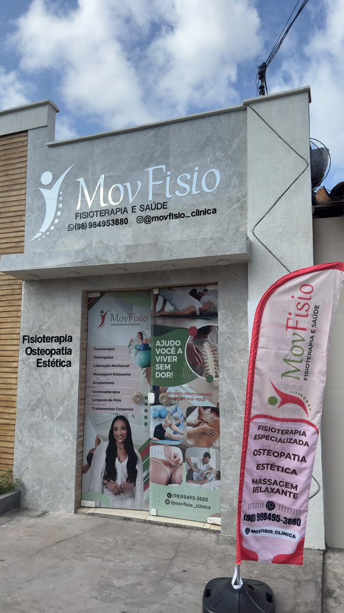
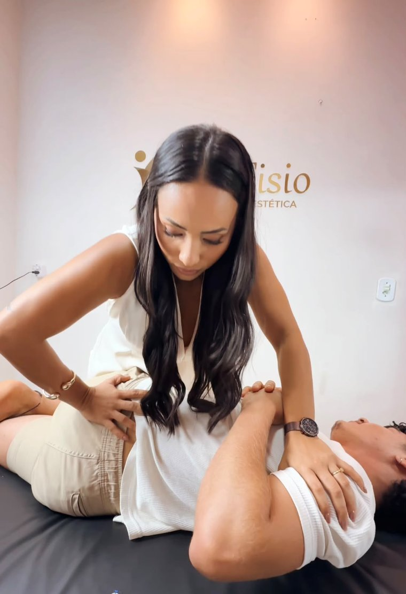
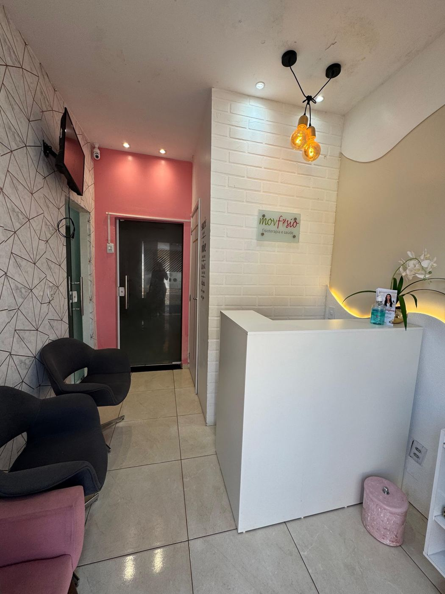
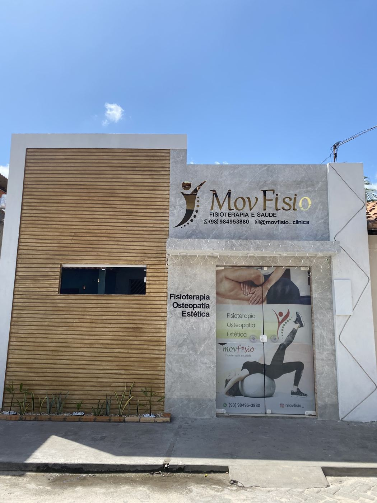

Cuidado, movimento e qualidade de vida em todas as fases da vida
MovFisio · Movimento que cuida. Resultado que transforma.
Na MovFisio, em Barreirinhas (MA), oferecemos muito mais que tratamentos: proporcionamos cuidado individualizado, acolhimento e atenção à sua saúde.
Somos especializados em fisioterapia e osteopatia, com uma abordagem completa para identificar as causas das dores, recuperar movimentos e melhorar sua qualidade de vida.
Contamos também com Pilates, atendimentos pediátricos, cuidados para idosos, estética, nutrição e experiências de relaxamento no nosso MovSpa.
72 avaliações no Google

e transformando resultados!
O que tratamos
Na MovFisio, cada paciente recebe um cuidado único e individualizado. Nosso atendimento começa com uma avaliação completa para identificar a origem das dores e limitações, permitindo desenvolver um plano de tratamento específico para cada necessidade.
Nosso objetivo vai além de aliviar a dor: queremos recuperar seus movimentos, devolver sua independência e proporcionar mais qualidade de vida.
Fisioterapia e Reabilitação
- Ortopédica: lesões, fraturas, entorses e pós-operatórios
- Neurofuncional: AVC, alterações neurológicas e dificuldades motoras
- Pediátrica: desenvolvimento motor e reabilitação infantil
- Geriátrica: equilíbrio, mobilidade e independência dos idosos
- Domiciliar: atendimento personalizado em casa
Coluna e Osteopatia Método Destrava
- Hérnia de disco e dor ciática
- Dores lombares e cervicais
- Coluna travada e tensão muscular
- Dores irradiadas para braços e pernas
- Alterações posturais e limitações de movimento
Terapias Manuais
- Osteopatia e liberação miofascial
- Mobilização articular e neural
- Ventosaterapia e Dry Needling
- Técnicas para alívio de dores e melhora da mobilidade
Pilates
- Fortalecimento muscular
- Melhora da postura e flexibilidade
- Equilíbrio, mobilidade e consciência corporal
MovSpa Estética e Bem-estar
- Massagem relaxante e terapêutica
- Drenagem linfática
- Pós-operatório estético
- Limpeza de pele
- Massagem modeladora
- Tratamentos para gordura localizada e medidas corporais
- Spa dos pés e rituais de relaxamento
- Experiências exclusivas do MovSpa
Nutrição
- Avaliação e acompanhamento nutricional
- Reeducação alimentar
- Emagrecimento saudável
- Planos alimentares individualizados
- Promoção da saúde e qualidade de vida
MovFisio · Movimento que cuida. Resultado que transforma.

Dra. Andrea AraujoMétodo Destrava
Fisioterapeuta e Osteopata · Criadora do Método Destrava
Sua coluna merece viver sem limitações!
O Método Destrava é uma abordagem de tratamento individualizada, desenvolvida para identificar e tratar as causas das dores e limitações da coluna.
Associamos técnicas de osteopatia, terapias manuais e exercícios específicos para aliviar dores, reduzir tensões musculares, recuperar a mobilidade e melhorar sua qualidade de vida.
Pré-avaliação online
Queremos entender o que você precisa! Responda algumas perguntas rápidas para que nossa equipe possa conhecer sua necessidade e orientar você sobre o agendamento do atendimento mais adequado.
Como podemos ajudar você?
Selecione o serviço que procura.
Qual é sua principal queixa ou objetivo?
Conte brevemente o que está sentindo ou qual atendimento deseja realizar.
Há quanto tempo você apresenta essa queixa?
Como prefere ser atendido?
Seus dados para contato
Enviar e falar com a equipe MovFisioApós o envio, nossa equipe entrará em contato para orientar sobre os serviços e agendar sua avaliação.
A pré-avaliação não é diagnóstico. Ela só organiza as informações para a sua primeira consulta, onde a avaliação é feita pessoalmente.
Resultados que transformam
Arraste a barra de cada foto para comparar o antes e o depois de pacientes da MovFisio. Fotos publicadas com autorização.
Nosso espaço
Um ambiente acolhedor, pensado para você chegar, relaxar e ser cuidado com calma.



Venha nos visitar
- Endereço
- R. Zuza Réis, 43, Centro, Barreirinhas (MA)
- Horário
- Segunda a sexta, das 8h30 às 20h
Sábado, das 8h30 às 12h - (98) 98445-5991
(98) 98495-3880
